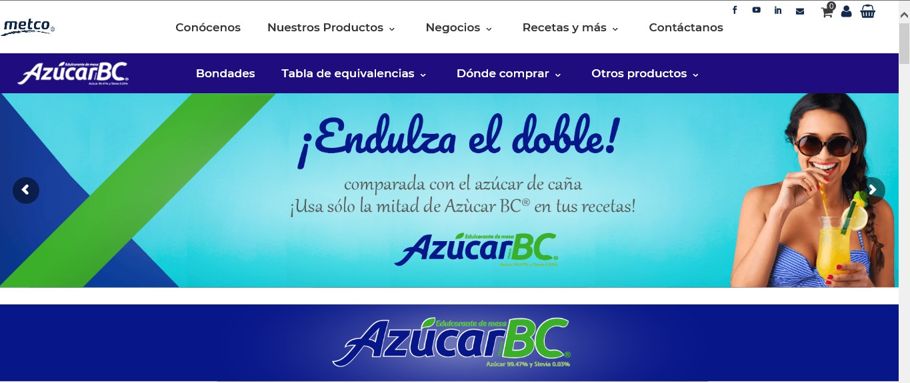
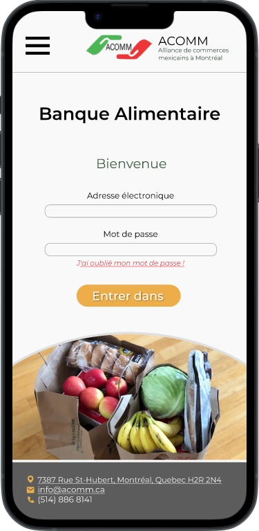
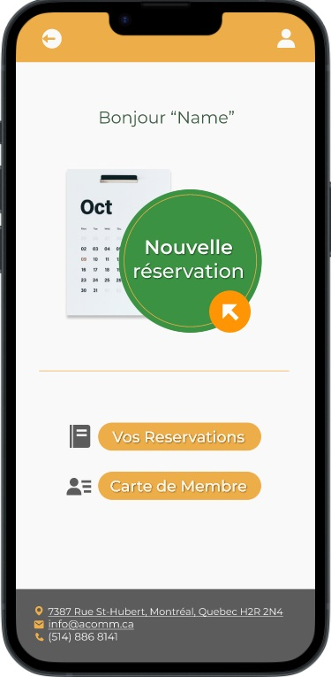
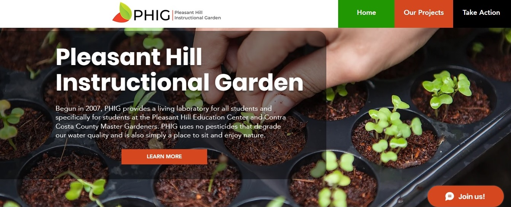
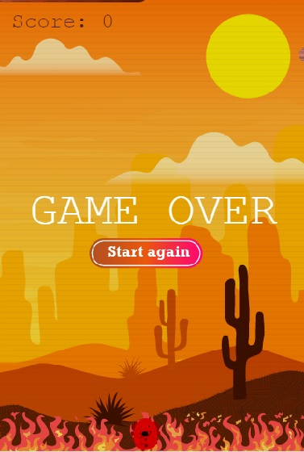
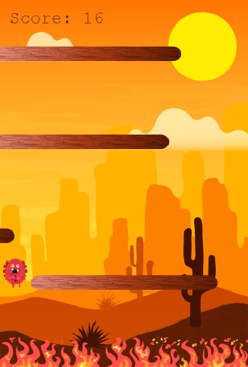
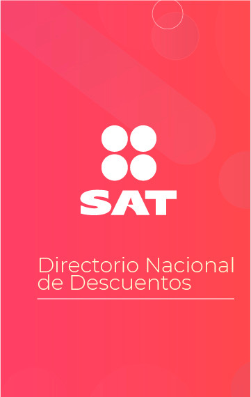
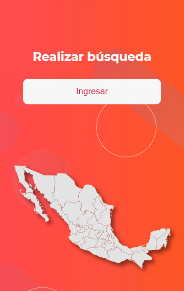
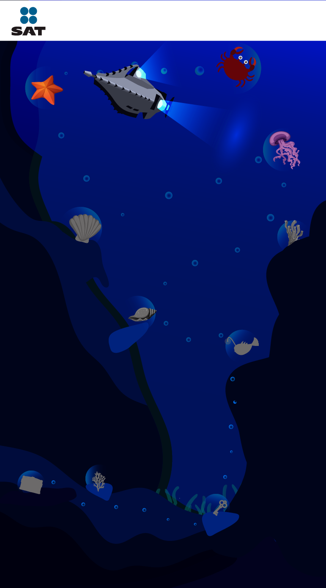
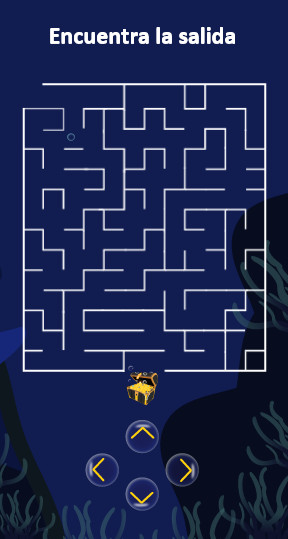

Design and creation of the front end for the website
Genuino Metco, company with a natural and friendly design.
* Project created with Wordpress

Developed a series of six branded minisites, each tailored to
showcase a distinct product: Azúcar BC, Sweet-O, Svetia,
Piloncillo Genuino, Mascabado BC, and Endulzante Genuino. Each
site was uniquely designed to reflect the identity, tone, and
target audience of its respective product, ensuring a cohesive yet
customized digital experience across the full lineup.
Design for ACOMM
Currently working on the first section for the renovation of a
section in the website-
ACOMM.
* Project created with FIGMA


Redesigned the reservation flow to make the user experience more
intuitive and streamlined. Simplified the overall site structure
by reducing the number of sections and pages, resulting in faster
navigation and clearer user pathways. Additionally, integrated key
features such as reservation cancellation, modification options,
and membership purchasing to enhance functionality and user
control.
Design for PHIG
Volunteer project to create the first website for the organization
PHIG
(Pleasant Hill Instructional Garden).
* Project created with WIX

This is the initial sketch of a project in progress as I continue
to expand it with additional sections, content, and interactive
features. The current layout serves as a foundation, and I am
actively refining both the structure and functionality to enhance
the overall user experience.
Design 2D Game
Develop of a 2D game for the web using Phaser.
* Project created using Phaser


Developed as a school project, this 2D game challenges players to
navigate an increasingly difficult environment filled with
obstacles, while the game speed progressively intensifies. The
project focused on core gameplay mechanics, player responsiveness,
and dynamic difficulty scaling to create a fast-paced and engaging
experience.
Mobile application for employees.
Mobile app designed to provide employees with easy access to
information about various services and products.
* Project created with programming languages like PHP, HTML, CSS,
SQL and JavaScript.


Developed an internal government application featuring
localization functionality to assist users in identifying and
accessing nearby public services. The app was designed with
usability and accessibility in mind, providing real-time
location-based support to improve navigation and service reach
within the community.
Mobile application for Educational 2D Game
Project to create a minigame for high-level employees to explore
effective leadership strategies and qualities.
* Project created with programming languages like PHP, HTML, CSS,
SQL and JavaScript.


Players progress through a series of levels and challenges, each
designed to test their skills. Completing these stages is
essential to advancing in the game and ultimately reaching the
final objective, offering a sense of progression and achievement
throughout the gameplay experience.